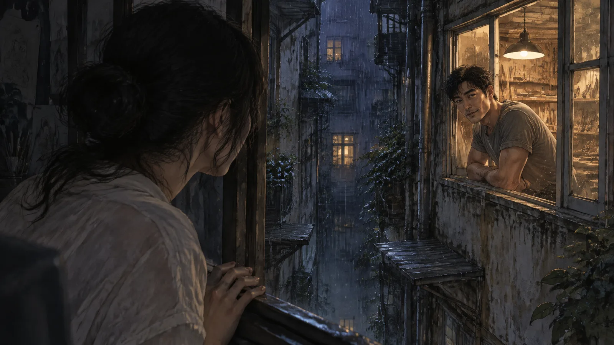
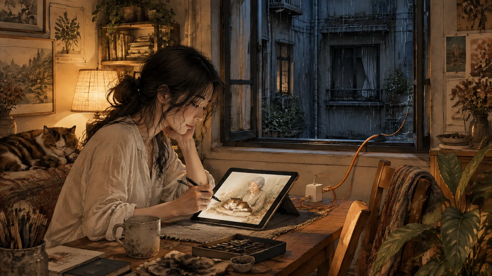
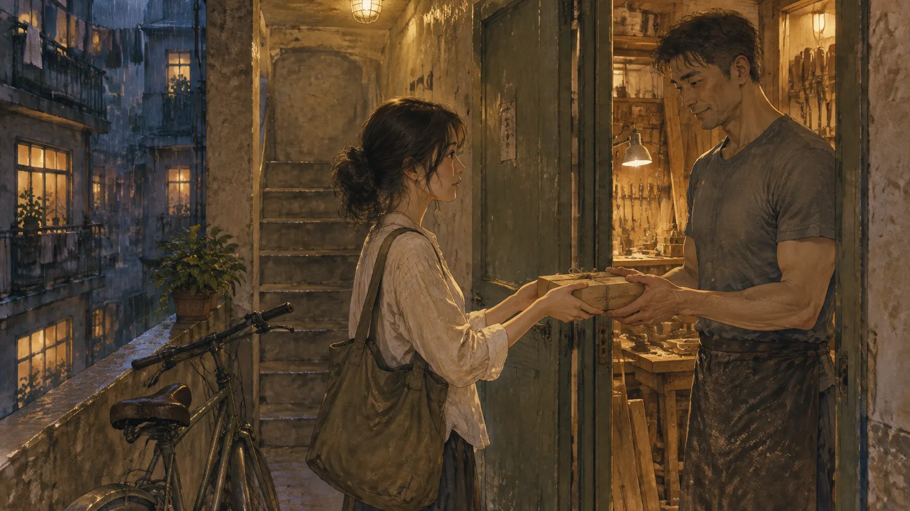
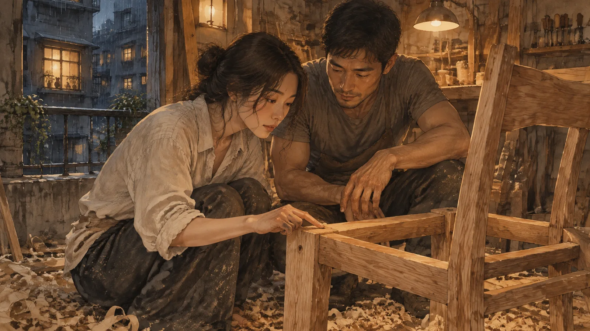
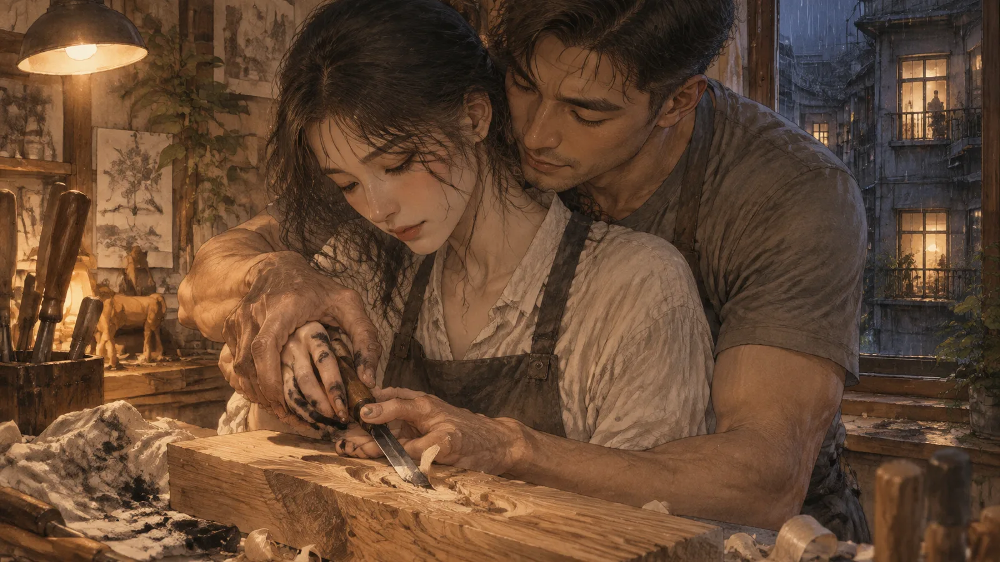
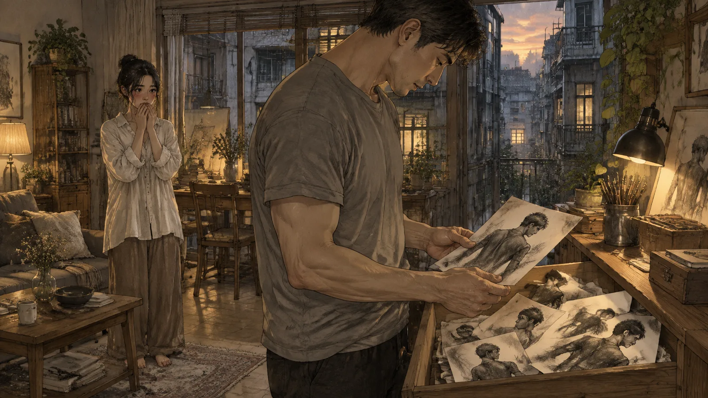
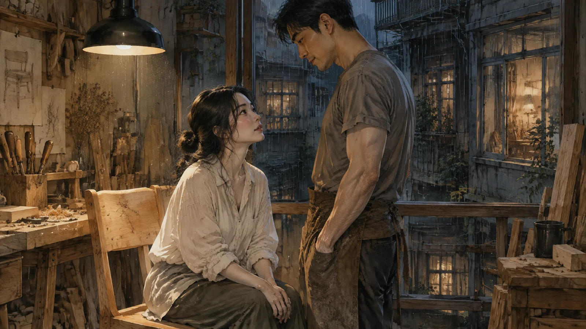
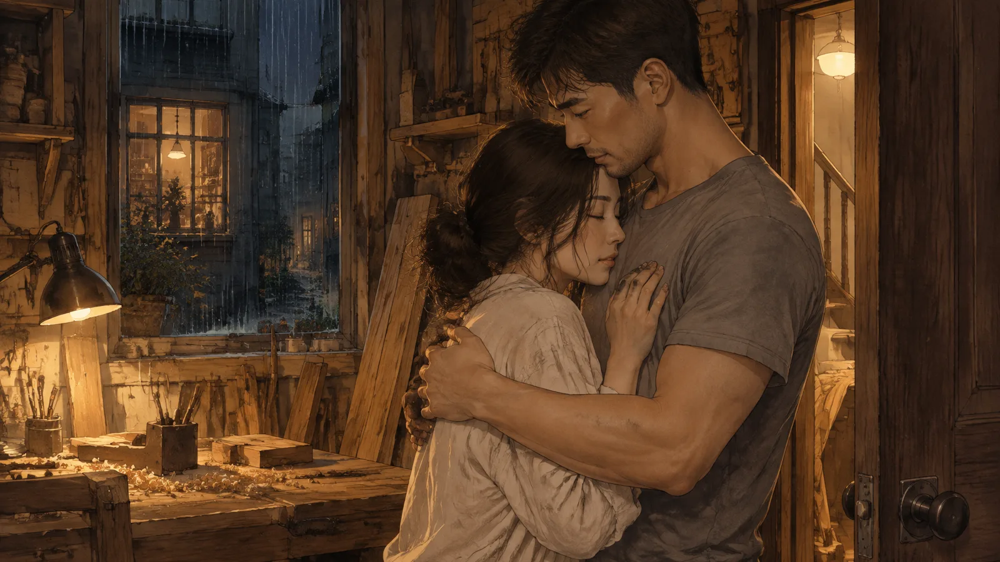
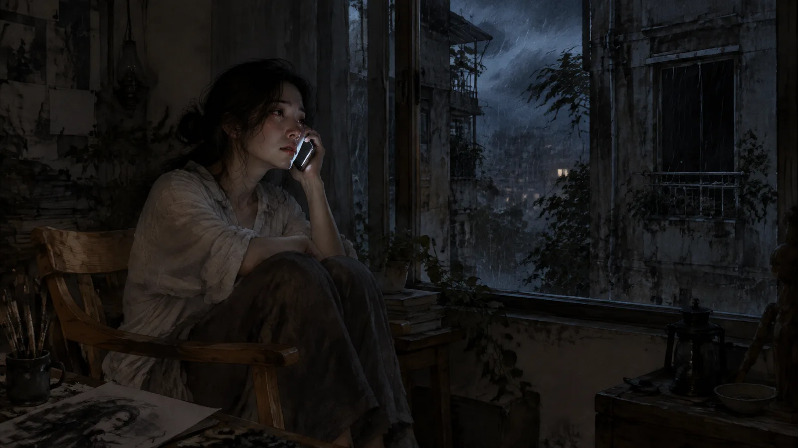
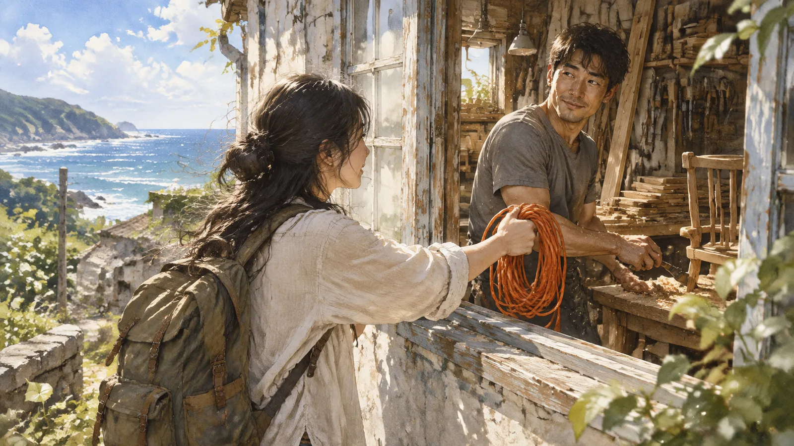

第一章停電
停電的時候，蘇晚正在畫一隻貓的第三根鬍鬚。
颱風從傍晚開始，雨打在鐵窗上像有人一直在敲。她的公寓在中山區一條老巷子裡，五樓，一九七〇年代的房子，隔音很差，可是租金便宜，而且有一個朝著天井的大窗戶。她是插畫家，接案的，工作室就是客廳的那張桌子。畫貓的案子明天早上要交。
九點四十分，燈滅了。
不是整棟樓。她走到窗邊，看到天井對面的窗戶還亮著——四樓、五樓、六樓，都亮著。只有她這一戶是黑的。她去看電箱，總開關跳了，她推回去，「啪」一聲又跳掉。再推，再跳。
她站在黑暗裡，聽著雨。手機的電量百分之二十三。畫圖用的平板電量百分之十一。明天早上九點要交。
她想了三分鐘，然後她做了一件她平常絕對不會做的事。
她打開窗戶，對著天井對面那扇亮著的窗戶喊：「不好意思——」
雨聲太大。她喊了第二次，大聲一點。
對面五樓的窗戶開了。一個男人探出頭來，三十幾歲，短髮，穿一件灰色的T恤，肩膀很寬。他看著她，隔著大約四公尺的天井，隔著雨。

「妳說什麼？」
「我停電了。」蘇晚喊，「只有我這一戶。你那邊有電嗎？」
「有。」
「那——」她忽然覺得這個要求很荒謬，可是她已經開口了，「你有沒有延長線？很長的那種？」
男人看著她，看了兩秒。然後他的臉上出現一個很淡的表情，像是在忍住笑。
「妳要我從這裡拉一條線給妳？」
「我知道很奇怪。」蘇晚說，「可是我明天早上要交稿，我的平板快沒電了。我可以付你電費。」
男人沒有回答。他把頭縮回去了。
蘇晚站在窗邊，雨從窗戶飄進來，打在她的手臂上。她想，算了，他大概覺得我是瘋子。她正要把窗戶關上——
對面的窗戶又開了。男人手裡拿著一捆橘色的延長線，工地用的那種，很粗。他把一頭綁在一個什麼東西上——她看不清楚——然後把另一頭拿在手裡，估了一下距離。
「接好。」他說。
然後他把延長線丟過來。
第二章延長線
線飛過天井，穿過雨，落在她的窗台上。她伸手抓住的時候，手是抖的，不知道是冷的還是別的。
「插頭在那一頭。」男人說，「我這邊接好了。妳插上去試試看。」
她把線拉進來，找到插頭，接上平板的充電器。充電的圖示亮了。
她回到窗邊。「有了。謝謝。真的。」
「不客氣。」男人說。他還站在窗邊，沒有要關窗的意思。「妳畫什麼的？」
「插畫。明天要交一隻貓。」
「什麼樣的貓？」
蘇晚愣了一下。從來沒有人問過她這個。客戶會問「可以再可愛一點嗎」，編輯會問「可以趕上截稿嗎」，可是沒有人問過「什麼樣的貓」。
「一隻很老的貓。」她說，「十七歲。牠的主人是一個八十歲的老太太，出版社要出她的回憶錄，封面要放這隻貓。牠已經死了，我只有一張照片。」
男人點點頭。「那要畫得像牠活著的時候。」
「對。」
「妳畫得出來嗎？」
蘇晚看著他。四公尺，雨，兩扇窗戶。他的臉在他那邊的燈光裡，一半亮，一半暗。
「不知道。」她說，「我在試。」
「那妳去畫吧。」他說，「線我不會收。」
他把窗戶關上了。
蘇晚回到桌子前面，平板充著電，橘色的線從窗戶拉進來，橫過她的客廳。她看著那條線。她想，這是她三年來第一次讓一個東西從外面進到她的房間裡。
她畫完了那隻貓。凌晨三點。她畫牠躺在一個老太太的膝蓋上，眼睛半閉著，鬍鬚很長，其中有一根是白的。

她抬起頭的時候，對面的窗戶是黑的。他睡了。橘色的線還在，從他的窗戶到她的窗戶，在雨裡，微微地晃。
第三章對窗
第二天颱風走了。她的電也修好了，是電表的問題，台電的人來換了一個。
她把延長線收好，捲成一捆，站在窗邊。對面五樓的窗戶開著，可是沒有人。她不知道他什麼時候在。她不知道他叫什麼。
她在窗台上放了一盒東西——她早上去買的，巷口那家的鳳梨酥——和一張紙，寫著「謝謝。線在這裡，你方便的時候拿」。然後她想了一下，這樣他要怎麼拿？她總不能再叫他丟一次。
她把紙拿回來，在後面加了一行：「或者我拿過去。你住幾號？」
然後她把紙和鳳梨酥放回窗台上，等。
等了一個下午。她畫了一半的圖，改了三次，每改一次就看一次窗戶。
五點半，對面的窗戶有人了。
他看到窗台上的東西，看到紙，看了很久——她假裝在畫圖，可是她的餘光全部在那裡。然後他抬起頭，看向她。
「二十三號。」他隔著天井說，「五樓。門口有一台腳踏車。」
「好。」
「妳叫什麼？」
「蘇晚。」她說。晚上的晚。
「沈聿。」他說。
他沒有解釋是哪個聿。她後來查了，是「筆」的意思，很少見的字。她想這個名字很適合他，因為他說話很少，每一個字都像是選過的。
她把鳳梨酥拿過去。二十三號，五樓，門口真的有一台腳踏車，很舊的，鋼管車架。她按門鈴，他開門，屋子裡有一種味道——木頭的，新鮮的，像剛鋸開的樹。

「你做木工？」
「嗯。」他接過鳳梨酥，「進來坐？」
她沒有進去。她說她還有圖要畫。他說好。她轉身下樓，走到三樓的時候，發現自己的心跳很快，快到她必須停下來，扶著樓梯的扶手，站一會兒。
她三十歲了。她跟自己說，妳三十歲了。
可是心跳不理她。
第四章木屑
之後的三個星期，他們用窗戶講話。
不是每天。有時候幾天一次。她在畫圖的時候會聽到對面有聲音——鋸子，砂紙，或者一種很輕的、有節奏的敲擊——然後她會抬頭，他的窗戶開著，他在裡面做什麼，背對著她。有時候他會轉過來，看到她，點一下頭。有時候不會。
她開始畫他。不是故意的。她畫圖的時候手會自己動，畫到後來發現紙上是一個背影，肩膀很寬，低著頭，手裡拿著什麼。她把那些畫撕掉。撕了幾張以後，她不撕了，收進抽屜裡。
有一天他問她：「妳那隻貓，交了嗎？」
「交了。編輯說老太太看了哭了。」
「為什麼哭？」
「她說那根白鬍鬚，是她十年前幫牠剪的。」蘇晚說，「她以為沒有人會注意到。」
沈聿沒有說話。可是他停下手裡的東西，看著她，看了很久。天井裡有風，把她的頭髮吹起來。
「妳注意到了。」他說。
「照片裡有。我就畫了。」
「大部分人看照片，看不到白鬍鬚。」他說，「他們看到一隻貓。」
她不知道怎麼回答。她低下頭，假裝在整理桌上的筆。她的耳朵很熱。
「我在做一把椅子。」他忽然說，「妳要不要來看？」
✦
他的工作室是他的客廳。跟她一樣，只是她的桌子上是紙和筆，他的桌子上是木頭和刀。
椅子放在中間。還沒有做好，只有骨架，四隻腳和椅背，木頭是淺色的，上面還有鉛筆畫的線。地上全是木屑，踩上去很軟。
「這是什麼木頭？」
「檜木。台灣的。」沈聿說，「一個客人的阿嬤留下來的老衣櫃，壞了，他捨不得丟，叫我做成一把椅子。」
蘇晚蹲下來看。她看到木頭上有一些很細的紋路，還有一個很小的、圓形的洞。
「這裡有一個洞。」
「蟲蛀的。八十年前的。」沈聿在她旁邊蹲下來。他很近。她聞到那種味道，木頭的，新鮮的，還有一點點汗，「客人說要留著。他說他小時候，會把手指伸進去。」
蘇晚看著那個洞。她想伸手去摸，可是她沒有。她的手放在膝蓋上。
「你可以摸。」沈聿說。
她伸出手。木頭是溫的，比她想的溫。她的手指碰到那個洞的邊緣，很光滑，八十年的光滑。

沈聿的手在旁邊。離她的手大概五公分。他沒有動。她也沒有動。
「很漂亮。」她說。她的聲音比她想的小。
「還沒做好。」他說。
她站起來。太快了，頭有一點暈。她說她要回去了，他說好，他送她到門口。門口那台腳踏車，她不小心碰到了，倒了，很大聲。
「對不起——」
「沒關係。」他把腳踏車扶起來。他笑了。她第一次看到他笑，不是忍住的那種，是真的。他的眼角有紋路。
她走下樓。三樓，她又停下來了。
第五章雨傘
她的鉛筆用完了，是在一個星期五的晚上。
不是普通的鉛筆，是一種很軟的、畫陰影用的炭筆，只有一間店有賣，在中山北路的巷子裡，走路二十分鐘。外面在下雨。她本來想算了，明天再去，可是她看著桌上那張畫到一半的圖——一隻鳥，翅膀還沒有影子——覺得今天晚上不畫完會睡不著。
她拿了傘，走下樓。
一樓的門口，沈聿站在那裡。他在收腳踏車，褲管濕了一半。
「妳要出去？」
「買炭筆。」
「這麼晚？」
「用完了。」
他看著她，看了一下她手裡的傘——很小的一把，折疊的，傘骨有一根歪了——然後他把自己的傘打開。是一把很大的黑傘，長柄的。
「我陪妳。」他說，「妳那把傘會漏。」
她想說不用。可是她看著那把黑傘，看著雨，然後她走到傘下面。
二十分鐘。
一把傘，兩個人，肩膀會碰到。不是每一步，是走到人行道變窄的地方，或者要閃一台停在路邊的機車的時候。碰一下。分開。再碰一下。她數了。從她家到文具店，碰了十一次。
他們沒有講很多話。他問她畫什麼，她說一隻鳥。他問什麼鳥，她說不知道，客戶說「一隻看起來要飛走的鳥」。他說那很難，她說對。然後他們就走。雨打在傘上，很大聲，可是傘下面很安靜。
第七次碰到肩膀的時候，他說：「妳走靠裡面一點。」
「為什麼？」
「外面會濕。」
她往裡面走了一步。這樣肩膀就一直碰著了。她不知道這樣是不是他的意思。她不敢問。
文具店快關門了，老闆認得她，說「蘇小姐又來了」，她買了六支炭筆，老闆看了一眼站在門口收傘的沈聿，什麼都沒有說，可是把炭筆的袋子打結的時候打了兩次。
回去的路上，肩膀碰了十四次。她數的。
到了一樓門口，他把傘收起來，甩了甩水。
「謝謝。」她說。
「炭筆。」他說，「妳畫鳥的時候，翅膀的影子，不要畫太黑。」
「為什麼？」
「要飛走的鳥，影子是輕的。」他說，「因為牠快要不在那裡了。」
她愣住了。他點了一下頭，推著腳踏車進去了。
她站在一樓門口，手裡拿著六支炭筆，衣服的一邊肩膀是乾的，另一邊有一點濕。
那天晚上她畫完了那隻鳥。翅膀的影子很輕。客戶說：「就是這個。牠看起來馬上就要飛了。」
第六章鑿刀
「妳想試試看嗎？」
那是又過了一個星期。她去看椅子的進度——她告訴自己是去看椅子。椅子的椅面做好了，他在刻椅背上的紋路，用一把很小的鑿刀，一下一下，木屑像雪一樣掉。
「我不會。」
「我教妳。」
他把鑿刀遞給她。她接過來，握著。手柄是木頭的，被他握了很多年，握的地方比其他地方顏色深。
「不是這樣握。」他說。
然後他的手蓋上來。

蓋在她的手上，把她的手指一根一根調整位置。他的手很大，很粗，掌心有繭。他的手是溫的。她的手在他的手裡，握著一把鑿刀，對著一塊八十年的檜木。
「這樣。」他說。他的聲音在她耳朵旁邊，很近，「不要用力。讓刀自己走。」
她推了一下。木屑掉下來，一小片，捲起來的。
「對。」他說。
他的手還在。他沒有拿開。她的心跳很大聲，大到她覺得他一定聽得到，大到她覺得整間屋子都是她的心跳。
「再一次。」他說。
她再推了一次。第二片木屑。
然後他的手拿開了。很慢，像是在確認她可以自己握住。她握住了。她繼續推，第三片，第四片。他站在旁邊看。她不敢抬頭。
「妳學得很快。」他說。
「你教得好。」
「不是。」他說，「是妳的手很穩。畫畫的人的手。」
她放下鑿刀。她的手心全是汗。她看著那塊木頭，看著她刻出來的那一小段線，歪的，可是是她刻的。
「沈聿，」她說，「你為什麼要教我？」
他沒有立刻回答。他把鑿刀拿起來，放回工具架上，一把一把排好。
「因為妳看得到白鬍鬚。」他說，「我想看看妳的手會做出什麼。」
第七章抽屜
他看到那些畫，是一個意外。
那天他來她這裡——第一次來。他說要看看那條延長線當初是從哪裡拉進來的，「工程上的好奇」。她讓他進來了。她的客廳很小，一張桌子，一張床，一個書架，一個窗戶。他站在窗邊，看著對面自己的窗戶，說：「原來從這邊看是這樣。」
然後他要找一張紙寫東西。她說桌上有。他拉開桌子的抽屜。
不是那個抽屜。是另一個。
抽屜裡是十幾張畫。都是一個背影。肩膀很寬，低著頭，手裡拿著什麼。有的只畫了幾筆，有的畫得很細，細到看得出T恤的皺褶。最上面那一張，是他蹲在椅子旁邊，側臉，眼角有紋路。

她看到他拉開抽屜的時候，整個人像被釘在地上。
他沒有說話。他一張一張看。看得很慢。她站在他後面，離他兩公尺，覺得自己要死了，覺得整個房間的空氣都不見了，覺得她應該衝過去把抽屜關上，可是她的腳不動。
他看完了。他把畫放回去，一張一張，按原本的順序。然後他把抽屜關上。
他轉過身。
「這是我。」他說。
不是問句。
她的臉燙得像發燒。她想說「不是」，想說「那是隨便畫的」，想說「那是練習」。她張開嘴，什麼都沒有出來。
「妳什麼時候開始畫的？」
「……延長線那天。」她說。她的聲音小到自己都聽不到，「隔天。」
他站在那裡，看著她。他的表情她讀不懂——不是笑，不是驚訝，是一種很安靜的東西，像他在刻木頭的時候。
「蘇晚。」他說。
「嗯。」
「妳畫我的時候，我在做什麼？」
「做椅子。」
「妳的椅子。」他說，「我在做妳的椅子，妳在畫我。」
她說不出話。
他走過來。兩公尺變成一公尺。他站在她面前，低下頭，離她很近，近到她看得到他的睫毛。
「我可以再看一次嗎？」他說，「最上面那一張。」
她點頭。
他沒有去拉抽屜。他伸出手，碰了一下她的臉——很輕，用手指的背面，從她的太陽穴到下巴，像在確認什麼。
「妳畫得很像。」他說，「可是我看妳的時候，比那個更——」
他停住了。他把手放下。
「我要回去了。」他說，「椅子還沒做完。」
他走了。她站在房間中央，站了很久，然後她坐到地上。她的臉還在燙。她把手放在他碰過的地方。
那天晚上她沒有畫圖。她躺在床上，看著天花板，聽著對面傳來的鑿刀的聲音，一下，一下。她想：他知道了。
她想：他沒有走。
第八章那把椅子
椅子做好的那天，下雨。
不是颱風，是梅雨，細細的，一整天。她在窗邊畫圖，聽到對面的聲音停了。她抬頭，沈聿站在窗邊，手裡沒有東西。
「做好了。」他說。
「客人要來拿了？」
「明天。」他說，「今天晚上，妳要不要來坐坐看？」
她去了。
椅子放在他客廳的中間，燈打在上面。檜木的顏色是淺蜜色的，椅背上有她刻的那一小段線——他沒有磨掉，他把它留著，在其他的紋路中間，歪歪的，像一個記號。那個蟲蛀的洞在椅面的邊緣，他把它磨得很圓。

「坐。」
她坐下來。
椅子是溫的。不是因為燈，是木頭本身。它的形狀剛好接住她的背，椅面的高度剛好讓她的腳可以平放在地上。她坐在一把八十年的老衣櫃變成的椅子上，在一個木工的客廳裡，外面下著雨。
「怎麼樣？」
「很好。」她說，「很——」她找不到字。
沈聿站在她面前。他沒有坐。他看著她坐在椅子上，看了很久。
「我做這把椅子的時候，」他說，「量了很多次尺寸。客人給了他阿嬤的身高。可是我做到後來，發現我量的不是他阿嬤的。」
蘇晚抬頭看他。
「我量的是妳的。」他說，「妳每次來，蹲在旁邊看，我就看妳的背，妳的腿，妳坐著的樣子。我做到一半才發現。」
雨打在窗戶上。她坐在椅子上，不能動。
「客人明天來拿。」沈聿說，「我會再做一把。用同一塊木頭剩下的。那一把是妳的尺寸。」
「沈聿——」
「我知道。」他說，「妳不用說什麼。我只是想讓妳知道，這把椅子是照妳做的。妳坐起來很好，是因為它本來就是妳的。」
她站起來。太快了，椅子往後移了一點，在地板上發出聲音。她站在他面前，離他很近，近到她要抬頭才能看到他的眼睛。
她想說很多話。她想說她三年前有一個人，那個人走了，她從此不讓任何東西從外面進到她的房間。她想說那些畫，她一張都沒有撕，以後也不會。她想說她在三樓的樓梯停過很多次。
她說的是：「我要回去了。」
他點點頭。他沒有攔她。他送她到門口。她走下樓，一樓，二樓，三樓——她停下來。她扶著扶手，站了很久。
然後她沒有下去。她轉身，走回五樓。
門還開著。他站在門口，像是知道她會回來。
「我忘了東西。」她說。
「什麼？」
她不知道。她站在門口，看著他。
「我不知道。」她說，「可是我忘了。」
他伸出手，把她拉進去，把門關上。
他沒有做別的。他只是抱著她。在門的後面，在木頭的味道裡，在雨聲裡。她的臉貼在他的胸口，聽到他的心跳——也很快。跟她一樣快。

「妳的手很冷。」他說。
「我知道。」
「我幫妳暖。」
第九章花蓮
他要去花蓮，是她在六月知道的。
不是他說的。是那個來拿椅子的客人說的，客人是他的朋友，在門口跟她閒聊，說「阿聿下個月就回花蓮了，這裡的工作室要收了，妳知道吧？」她說她知道。她不知道。
那天晚上她沒有去他那裡。她坐在自己的窗邊，看著對面亮著的窗戶。他在裡面，在做她的那把椅子。她看得到木屑在燈光裡飛。
她想起三年前。那個人也是這樣，先是說要去別的城市工作，然後說會回來，然後就沒有了。她記得那種等的感覺。她記得她把窗戶關上的那一天。
十點，對面的窗戶開了。
「妳今天沒有來。」沈聿說。
「嗯。」
「怎麼了？」
她看著他。四公尺，兩扇窗戶，中間沒有雨。
「你要去花蓮。」她說。
他安靜了幾秒。
「對。」
「你沒有說。」
「我在想怎麼說。」他說，「我爸的工作室在花蓮。他七十歲了，手不行了。他叫我回去接。我答應了，在認識妳之前。」
「什麼時候？」
「七月。」
蘇晚沒有說話。她想把窗戶關上。她的手已經放在窗框上了。
「蘇晚。」他說。
她停下來。
「我不是要走。」他說，「我是要換一個地方做椅子。花蓮到台北兩個小時。我可以每個星期回來。或者——」他停了一下，「或者妳可以來。那裡有海。妳可以畫海。」
「我在這裡有工作。」
「我知道。」
「我不能說走就走。」
「我知道。」他說，「我沒有要妳走。我只是在說，那裡有一扇窗戶，是空的。」
她的手還在窗框上。她看著他，看著他那邊的燈，看著他背後那把做到一半的椅子。
「我要想一下。」她說。
「好。」
她把窗戶關上了。這一次，關得很慢。
第十章颱風
七月的颱風，比上一次大。
氣象局說是強颱，整個台北都在準備。蘇晚把窗戶的鐵窗鎖好，把桌子搬離窗邊，把平板充飽電。她做這些的時候，一直在看對面。
對面的窗戶是黑的。
他三天前走了。她沒有去送。他來敲過門，她沒有開。她站在門後面，聽他站了很久，然後聽他下樓。腳踏車推走的聲音。然後沒有了。
那把椅子，他放在她的門口。上面放了一張紙：「妳的尺寸。窗戶是空的。」
她把椅子搬進來，放在窗邊。她坐在上面，畫圖，畫海。她沒有看過花蓮的海，她憑想像畫。畫了三天，畫了幾十張，每一張都不像。
颱風晚上九點登陸。雨打在鐵窗上，像有人一直在敲。
九點四十分，燈滅了。
她笑了。她坐在黑暗裡，在那把椅子上，笑了很久，笑到後來變成別的東西。整棟樓都停電了，這次不是只有她。天井對面的窗戶全是黑的。沒有人可以丟一條線給她。
她的手機響了。

「妳那邊停電了嗎？」沈聿的聲音。有風的聲音，很大。
「停了。整棟。」
「我這邊也是。」他說，「花蓮風很大。我在工作室，一個人。我爸在家。」
「你在做什麼？」
「坐在一把椅子上。」他說，「妳呢？」
「一樣。」
兩個人都沒有說話。電話裡是風，是雨，是兩百公里外的另一場風雨。
「蘇晚，」他說，「我可以問妳一件事嗎？」
「嗯。」
「三年前，是誰？」
她在黑暗裡閉上眼睛。
「一個說會回來的人。」她說。
「他沒有回來。」
「沒有。」
「所以妳把窗戶關了。」
「對。」
沈聿安靜了很久。風的聲音。然後他說：「我不會叫妳開窗戶。妳要開就開，不開就不開。可是我要告訴妳一件事。」
「什麼？」
「我這裡的窗戶，是開的。」他說，「風很大，雨進來了，我沒有關。我在等。」
她握著手機。她的手在抖。
「等什麼？」
「等妳從對面丟一條線過來。」他說，「這次換妳。」
第十一章燈
她是隔天早上去的。
颱風還沒有完全走，火車開了，可是很慢。她帶了一個背包，裡面是平板和幾支筆，還有那幾十張畫得不像的海。她沒有帶椅子。椅子太大了。
火車到花蓮的時候是下午三點。雨停了，天是一種洗過的藍。她照著他給的地址走，走了二十分鐘，走到海邊。
工作室在一間老房子裡，門口有一台腳踏車。她認得那台車。
她站在門口。她沒有按門鈴。她站著，聽裡面的聲音——鋸子，砂紙，那種很輕的、有節奏的敲擊。
然後她做了一件她平常絕對不會做的事。
她繞到房子的側面。那裡有一扇窗戶，開著。窗戶裡面，他背對著她，低著頭，手裡拿著鑿刀。木屑像雪一樣掉。
她把背包放下，從裡面拿出一樣東西。
一條延長線。橘色的，工地用的，很粗。她從台北帶來的——他留在她窗台上的那一捆，她一直沒有還。
她把一頭握在手裡。然後她對著窗戶說：「不好意思——」

他的手停了。
他轉過來。他看到她，站在窗外，手裡拿著一條橘色的線，背後是花蓮的海和洗過的天。
他的臉上出現一個表情。不是忍住笑。是別的。是一個人等了很久、終於等到的那種。
「我停電了。」蘇晚說。她的聲音在抖，「我需要借一點光。」
他放下鑿刀。他走到窗邊。他們之間沒有天井，沒有四公尺，只有一扇窗戶的窗台。
「接好。」她說。
她把線遞過去。
他接住的不是線。他接住的是她的手。他把她的手握在他的手裡，隔著窗台，握了很久。他的手是溫的。
「妳的手很冷。」他說。
「我知道。」
「進來。」他說，「這裡有燈。」
她從窗戶爬進去。很難看，背包卡住了，她差點摔倒，他接住她。她站在他的工作室裡，在木頭的味道裡，在花蓮的下午三點。
牆邊有一把椅子。淺蜜色的，檜木。椅背上有一小段歪歪的線。
「妳的尺寸。」他說，「我又做了一把。這樣兩邊都有。」
她看著那把椅子，看著他，看著窗外的海。
「我可能沒有辦法一直在這裡。」她說。
「我知道。」
「我有工作，我有台北的窗戶——」
「我知道。」他說，「兩扇窗戶。中間有一條線。這樣就夠了。」
他低下頭。她抬起頭。
窗外的海很亮。工作室裡有燈。她的心跳很大聲，大到她覺得整個花蓮都聽得到。
她不管了。
（完）
留言板
看不懂、想補充、發現錯誤都歡迎留言；填個暱稱就能發。